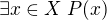
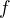
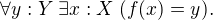
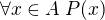

Logic and Proof
16 Functions in Lean
16.1 Functions and Symbolic Logic
Let us now consider functions in formal terms. Even though we have
avoided the use of quantifiers and logical symbols in the definitions
in the last chapter, by now you should be seeing them lurking beneath
the surface. That fact that two functions  are equal
if and only if they take the same values at every input can be
expressed as follows:
are equal
if and only if they take the same values at every input can be
expressed as follows:
This principle is a known as function extensionality, analogous to
the principle of extensionality for sets, discussed in Section
12.1. Recall that the notation abbreviates , and  abbreviates , thereby relativizing the quantifiers to  .
.
We can avoid set-theoretic notation if we assume we are working in a
logical formalism with basic types for  and , so that we can
specify that
and , so that we can
specify that  ranges over . In that case, we will write instead
ranges over . In that case, we will write instead
to indicate that the quantification is over . Henceforth, we will
assume that all our variables range over some type, though we will
sometimes omit the types in the quantifiers when they can be inferred
from context.
The function  is injective if it satisfies
and is surjective if

If  and
and  ,
,  is a left inverse
to if
Notice that this is a universal statement, and it is equivalent to the
statement that is a right inverse to .
is a left inverse
to if
Notice that this is a universal statement, and it is equivalent to the
statement that is a right inverse to .
Remember that in logic it is common to use lambda notation to define
functions. We can denote the identity function by , or
perhaps to emphasize that the domain of the function
is . If and , we can define the
composition  by .
by .
Remember that if  is any predicate, then in first order logic we
can assert that there exists a unique satisfying , written
, with the conjunction of the following two
statements:
is any predicate, then in first order logic we
can assert that there exists a unique satisfying , written
, with the conjunction of the following two
statements:
Equivalently, we can write Assuming , the following two statements are equivalent:
and both can be taken to assert that "the satisfying  also
satisfies
also
satisfies  ."
."
A binary relation  on and is functional if it satisfies
In that case, a logician might use "iota notation,"
to define
on and is functional if it satisfies
In that case, a logician might use "iota notation,"
to define  to be equal to the unique
to be equal to the unique  satisfying
satisfying  . If
satisfies the weaker property
a logician might use "the Hilbert epsilon" to define a function
to "choose" a value of satisfying . As we have noted
above, this is an implicit use of the axiom of choice.
. If
satisfies the weaker property
a logician might use "the Hilbert epsilon" to define a function
to "choose" a value of satisfying . As we have noted
above, this is an implicit use of the axiom of choice.
16.2 Second- and Higher-Order Logic
In contrast to first-order logic, where we start with a fixed stock of
function and relation symbols, the topics we have been considering in
the last few chapters encourage us to consider a more expressive
language with variables ranging over functions and relations as
well. For example, saying that a function has a
left-inverse implicitly involves a quantifying over functions,
The theorem that asserts that if any function from to is
injective then it has a left-inverse can be expressed as follows:
Similarly, saying that two sets and have a one-to-one
correspondence asserts the existence of a function as
well as an inverse to . For another example, in Section 15.4 we
asserted that every functional relation gives rise to a corresponding
function, and vice-versa.
What makes these statements interesting is that they involve quantification, both existential and universal, over functions and relations. This takes us outside the realm of first-order logic. One option is to develop a theory in the language of first-order logic in which the universe contains functions, and relations as objects; we will see later that this is what axiomatic set theory does. An alternative is to extend first-order logic to involve new kinds of quantifiers and variables, to range over functions and relations. This is what higher-order logic does.
There are various ways to go about this. In view of the relationship between functions and relations described above, one can take relations as basic, and define functions in terms of them, or vice-versa. The following formulation of higher-order logic, due to the logician Alonzo Church, follows the latter approach. It is sometimes known as simple type theory.
Start with some basic types, and a special type, , of propositions. Add the following two rules to build new types:
- If
 and
and  are types, so is
are types, so is  .
. - If and are types, so is .
The first intended to denote the type of ordered pairs  , where
, where
 is in and
is in and  is in . The second is intended to denote the
type of functions from to . Simple type theory now adds the
following means of forming expressions:
is in . The second is intended to denote the
type of functions from to . Simple type theory now adds the
following means of forming expressions:
- If is of type and is of type , is of type
.
- If
 is of type , then is of type and
if of type . (These are intended to denote the first and
second element of the pair .)
is of type , then is of type and
if of type . (These are intended to denote the first and
second element of the pair .) - If is a variable of type , and is any expression of type
, then is of type .
- If is of type and is of type , is of
type .
In addition, simple type theory provides all the means we have in first-order logic — boolean connectives, quantifiers, and equality – to build propositions.
A function which takes elements of and to a type
is viewed as an object of type . Similarly, a binary
relation on and is viewed as an object of type . What makes higher-order logic "higher order"
is that we can iterate the function type operation indefinitely. For
example, if  is the type of natural numbers,
is the type of natural numbers,  denotes the type of functions from the natural numbers to the natural
numbers, and denotes the type of functions
which take a function as argument, and returns a natural number.
denotes the type of functions from the natural numbers to the natural
numbers, and denotes the type of functions
which take a function as argument, and returns a natural number.
We have not specified the syntax and rules of higher-order logic very carefully. This is done in a number of more advanced logic textbooks. The fragment of higher-order logic which allows only functions and relations on the basic types (without iterating these constructions) is known as second-order logic.
These notions should seem familiar; we have been using these constructions, with similar notation, in Lean. Indeed, Lean's logic is an even more elaborate and expressive system of logic, which fully subsumes all the notions of higher-order logic we have discussed here.
16.3 Functions in Lean
The fact that the notions we have been discussing have such a
straightforward logical form means that it is easy to define them in
Lean. The main difference between the formal representation in Lean
and the informal representation above is that, in Lean, we distinguish
between a type X and a subset A : set X of that type.
In Lean's library, composition and identity are defined as follows:
Ordinarily, to use these definitions the notation, you use the command
open function. We omit this command here, because we are duplicating
the definitions, for expository purposes.
Ordinarily, we use funext (for "function extensionality") to prove
that two functions are equal.
But Lean can prove some basic identities by simply unfolding definitions and simplifying expressions, using reflexivity.
We can define what it means for to be injective, surjective, or bijective:
Marking the variables x₁ and x₂ implicit in the definition of
injective means that we do not have to write them as
often. Specifically, given H : injective f, and H₁ x₁ : f x₁ = f
x₂, we write H H₁ rather than H x₁ x₂ H₁ to show x₁ = x₂.
We can then prove that the identity function is bijective:
More interestingly, we can prove that the composition of injective functions is injective, and so on.
The notions of left and right inverse are defined in the expected way.
In particular, composing with a left or right inverse yields the identity.
Notice that we need to use funext to show the equality of functions.
The following shows that if a function has a left inverse, then it is injective, and if it has a right inverse, then it is surjective.
16.4 Defining the Inverse Classically
All the theorems listed in the previous section are found in the Lean
library, and are available to you when you open the function namespace
with open function:
Defining inverse functions, however, requires classical reasoning, which we get by opening the classical namespace:
The axiom of choice tells us that if, for every x : X, there is a
y : Y satisfying R x y, then there is a function f : X → Y
which, for every x chooses such a y. In Lean, this "axiom" is
proved using a classical construction, the some function (sometimes
called "the indefinite description operator") which, given that there
is some x satisfying P x, returns such an x. With these
constructions, the inverse function is defined as follows:
Lean requires us to acknowledge that the definition is not
computational, since, first, it may not be algorithmically
possible to decide whether or not condition H holds, and even if it
does, it may not be algorithmically possible to find a suitable value
of x.
Below, the proposition inverse_of_exists asserts that inverse
meets its specification, and the subsequent theorem shows that if f
is injective, then the inverse function really is a left inverse.
16.5 Functions and Sets in Lean
In Section 7.4 we saw how to represent relativized universal and existential quantifiers when formalizing phrases like "every prime number greater than two is odd" and "some prime number is even." In a similar way, we can relativize statements to sets. In symbolic logic, the expression abbreviates , and  abbreviates .
Lean's library also defines notation for relativized quantifiers, though for notational reasons, we need to use a subscripted 0:
In the definition of the bounded quantifiers above, the variable x
is marked implicit. So, for example, we can apply the hypothesis H :
∀₀ x ∈ A, P x as follows:
The expression maps_to f A B asserts that f maps elements of the
set A to the set B:
The expression inj_on f A asserts that f is injective on A:
The variables x₁ and x₂ are marked implicit in the definition of
inj_on, so that the hypothesis is applied as follows:
The expression surj_on f A B asserts that, viewed as a function
defined on elements of A, the function f is surjective onto the
set B:
It is synonymous with the assertion that B is a subset of the image
of A, which is written f ' A, or, equivalently, image f A:
With these notions in hand, we can prove that the composition of
injective functions is injective. The proof is similar to the one
above, though now we have to be more careful to relativize claims to
A and B:
We can similarly prove that the composition of surjective functions is surjective:
The following shows that the image of a union is the union of images:
16.6 Exercises
Fill in the
sorry's in the last three proofs below.import data.int open function int algebra definition f (x : ℤ) : ℤ := x + 3 definition g (x : ℤ) : ℤ := -x definition h (x : ℤ) : ℤ := 2 * x + 3 example : injective f := take x1 x2, assume H1 : x1 + 3 = x2 + 3, -- Lean knows this is the same as f x1 = f x2 show x1 = x2, from eq_of_add_eq_add_right H1 example : surjective f := take y, have H1 : f (y - 3) = y, from calc f (y - 3) = (y - 3) + 3 : rfl ... = y : sub_add_cancel, show ∃ x, f x = y, from exists.intro (y - 3) H1 example (x y : ℤ) (H : 2 * x = 2 * y) : x = y := have H1 : 2 ≠ (0 : ℤ), from dec_trivial, -- this tells Lean to figure it out itself show x = y, from eq_of_mul_eq_mul_left H1 H example (x : ℤ) : -(-x) = x := neg_neg x example (A B : Type) (u : A → B) (v : B → A) (H : left_inverse u v) : ∀ x, u (v x) = x := H example (A B : Type) (u : A → B) (v : B → A) (H : left_inverse u v) : right_inverse v u := H -- fill in the sorry's in the following proofs example : injective h := sorry example : surjective g := sorry example (A B : Type) (u : A → B) (v1 : B → A) (v2 : B → A) (H1 : left_inverse v1 u) (H2 : right_inverse v2 u) : v1 = v2 := funext (take x, calc v1 x = v1 (u (v2 x)) : sorry ... = v2 x : sorry) Fill in the
sorryin the proof below.import data.set open function set variables X Y : Type variable f : X → Y variables A B : set X example : f ' (A ∪ B) = f ' A ∪ f ' B := eq_of_subset_of_subset (take y, assume H1 : y ∈ f ' (A ∪ B), obtain x [(H2 : x ∈ A ∪ B) (H3 : f x = y)], from H1, or.elim H2 (assume H4 : x ∈ A, have H5 : y ∈ f ' A, from mem_image H4 H3, show y ∈ f ' A ∪ f 'B, from or.inl H5) (assume H4 : x ∈ B, have H5 : y ∈ f ' B, from mem_image H4 H3, show y ∈ f ' A ∪ f ' B, from or.inr H5)) (take y, assume H2 : y ∈ f ' A ∪ f ' B, or.elim H2 (assume H3 : y ∈ f ' A, obtain x [(H4 : x ∈ A) (H5 : f x = y)], from H3, have H6 : x ∈ A ∪ B, from or.inl H4, show y ∈ f ' (A ∪ B), from mem_image H6 H5) (assume H3 : y ∈ f ' B, obtain x [(H4 : x ∈ B) (H5 : f x = y)], from H3, have H6 : x ∈ A ∪ B, from or.inr H4, show y ∈ f ' (A ∪ B), from mem_image H6 H5)) -- remember, x ∈ A ∩ B is the same as x ∈ A ∧ x ∈ B example (x : X) (H1 : x ∈ A) (H2 : x ∈ B) : x ∈ A ∩ B := and.intro H1 H2 example (x : X) (H1 : x ∈ A ∩ B) : x ∈ A := and.left H1 -- Fill in the proof below. -- (It should take about 8 lines.) example : f ' (A ∩ B) ⊆ f ' A ∩ f ' B := take y, assume H1 : y ∈ f ' (A ∩ B), show y ∈ f ' A ∩ f ' B, from sorry